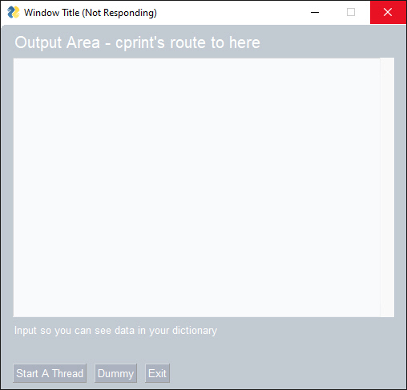
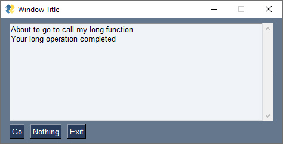
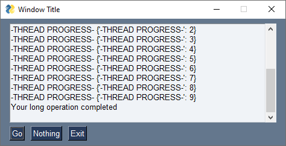

Multithreading
IMPORTANT GUI Topic!
Brief summary:
PySimpleGUI can help you with running long operations as threads without you needing to learn the threading library. The Window method perform_long_operation makes this serious GUI problem a non-issue.
Threads can "inject" events and data into a window.read() call. This allows your GUI application to simply stop, pend and awaken immediately when something happens. This makes for zero CPU time used when northing's happening and it means 0ms latency. In other words, you're not polling, you're pending.
The Long Operation
A classic problem of GUI programming is when you try to perform some operation that requires a lot of time. The problem is simple enough.... you have a GUI and when you press a button, you want a 10 second operation to take place while you're GUI patiently waits.
What happens to most people that give this a try gets the dreaded Windows/Linux/Mac "Your program has stopped responding do you wish to close it"
If you add a sleep(30) to your code, it's not very many seconds before your window does this:

No Bueno
PySimpleGUI Window.perform_long_operation
To get you over the initial hump of multi-threaded programming, you can let PySimpleGUI create and manage threads for you. Like other APIs in PySimpleGUI, it's been simplified down as far as possible.
Here's the basic steps using perform_long_operation
1. Pass your function name and a key to the call to window.perform_long_operation
2. Continue running your GUI event loop
3. Windows pend using their typical window.read() call
4. You will get the event when your function returns
5. The values dictionary will contain your function's return value. They key will be the same as the event. So, values[event] is your function's return value.
import PySimpleGUI as sg
import time
# My function that takes a long time to do...
def my_long_operation():
time.sleep(15)
return 'My return value'
def main():
layout = [ [sg.Text('My Window')],
[sg.Input(key='-IN-')],
[sg.Text(key='-OUT-')],
[sg.Button('Go'), sg.Button('Threaded'), sg.Button('Dummy')] ]
window = sg.Window('Window Title', layout, keep_on_top=True)
while True: # Event Loop
event, values = window.read()
if event == sg.WIN_CLOSED:
break
window['-OUT-'].update(f'{event, values}') # show the event and values in the window
window.refresh() # make sure it's shown immediately
if event == 'Go':
return_value = my_long_operation()
window['-OUT-'].update(f'direct return value = {return_value}')
elif event == 'Threaded':
# Let PySimpleGUI do the threading for you...
window.perform_long_operation(my_long_operation, '-OPERATION DONE-')
elif event == '-OPERATION DONE-':
window['-OUT-'].update(f'indirect return value = {values[event]}')
window.close()
if __name__ == '__main__':
main()
What if my function takes parameters?
Note that the first parameter for perform_long_operation is your function. If you're like most of us, you'll enter my_func() instead of my_func. The first actually calls your function immediately, the second passes your function's object rather than calling it.
If you need to pass parameters to your function, then you'll need to make one simple change... add a lambda. Think of it as how you would want your function called.
In the Demo Program for this call, Demo_Long_Operations.py, it uses a function that takes parameters as the example. Here is the line of code from that demo:
# This is where the magic happens. Add your function call as a lambda
window.perform_long_operation(lambda :
my_long_func(int(values['-IN-']), a=10),
'-END KEY-')
I've broken the code up with newlines to emphasize where your function call goes. A more common format may be:
Here is the function definition that is to be called:
The Thread-based Solution
If you're ready to jump on into threading, then you can do that too.
Here's the basic steps
1. You put your long-running operation into a thread
2. Your thread signals the window when it is done
3. Windows pend using their typical window.read() call
4. The values dictionary will contain your function's return value if you pass it through
Take a moment to get to know the code. You'll find the typical event loop. If you run this program, and you don't touch anything like your mouse, then it should sit for 10 seconds doing nothing and then print out the completed the message.

If you attempted to interact with the window by pressing the "Nothing" button, then you will likely get a message about your window stopped responding.
Threaded Long Operation
I think we can agree that brute force, no matter how badly we want it to work, won't. Bummer
import PySimpleGUI as sg
import time
import threading
def long_function_thread(window):
time.sleep(10)
window.write_event_value('-THREAD DONE-', '')
def long_function():
threading.Thread(target=long_function_thread, args=(window,), daemon=True).start()
layout = [[sg.Output(size=(60,10))],
[sg.Button('Go'), sg.Button('Nothing'), sg.Button('Exit')] ]
window = sg.Window('Window Title', layout)
while True: # Event Loop
event, values = window.read()
if event == sg.WIN_CLOSED or event == 'Exit':
break
if event == 'Go':
print('About to go to call my long function')
long_function()
print('Long function has returned from starting')
elif event == '-THREAD DONE-':
print('Your long operation completed')
else:
print(event, values)
window.close()
If you click the "Nothing" button, then you'll get a line printed in the Multiline that has the event and the values dictionary.
Because there are no "input" elements, your values dictionary is empty.
Clicking "Go" is when the fun begins.
You are immediately shown a message that the long-operation function is starting. The same function name as before is called long_function. But now the contents of that function have been replaced with starting a thread that executes the same code.
This single line of code is all that was needed to create our long0runing function as a thread and to start that thread:
The conversion over to a thread was done in 3 simple steps:
- Renamed the
long_fundtiontolong_function_thread - Pass into the
long_function_threadthewindowthat it will communicate with - Add call to
window.write_event_valuewhen the long_running_thread is existing
The result is a GUI that continues to operate and be responsive to user's requests during the long running operation.
Long operations with feedback
The power of the Window.write_event_value is that it can be used at any time, not just at the beginning and end of operations. If a long operation can be broken into smaller parts, then progress can be shown to the user. Rather than calling Window.write_event_value one time, it can be called a number of times too.
If we modify the code so that instead of sleeping for 10 seconds, we sleep for 1 second 10 times, then it's possible to show information about progress.
Here's the code with the new operation broken up into 10 parts
import PySimpleGUI as sg
import time
import threading
def long_function_thread(window):
for i in range(10):
time.sleep(1)
window.write_event_value('-THREAD PROGRESS-', i)
window.write_event_value('-THREAD DONE-', '')
def long_function():
threading.Thread(target=long_function_thread, args=(window,), daemon=True).start()
layout = [[sg.Output(size=(60,10))],
[sg.Button('Go'), sg.Button('Nothing'), sg.Button('Exit')] ]
window = sg.Window('Window Title', layout)
while True: # Event Loop
event, values = window.read()
if event == sg.WIN_CLOSED or event == 'Exit':
break
if event == 'Go':
print('About to go to call my long function')
long_function()
print('Long function has returned from starting')
elif event == '-THREAD DONE-':
print('Your long operation completed')
else:
print(event, values)
window.close()
And the resulting window
